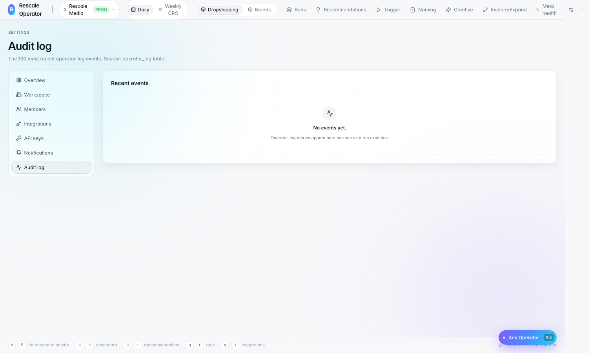

Campaign & creative signal inbox
Prioritized queue of campaign and creative signals — teams see what needs action, not noise.
Featured case study
AI Automation OS for Creative & Campaign Operations
An AI-assisted operating layer designed to help creative, media buying, and operations teams manage campaign quality, creative signals, launch readiness, winner detection, and daily decision workflows from one structured system.
Creative and campaign operations were fragmented across multiple tools, dashboards, naming conventions, creative assets, and team workflows. Teams had to manually review campaign setup, naming errors, performance signals, launch readiness, and winner/loser decisions — creating delays, inconsistent QA, reporting errors, and missed opportunities to scale winning creatives quickly.
Built a workflow-driven AI automation system that combines campaign QA, creative signal filtering, winner detection, launch checklists, dashboards, and human-in-the-loop review. Rescale Operator gives teams one structured operating layer instead of juggling disconnected tools and manual spreadsheets.
End-to-end flow from raw campaign data to actionable operational decisions.
Campaign, ad set, ad metadata, spend, ROAS, creative status, and product/market context.
Daily metrics sync, naming field extraction, launch tracking, and signal prioritization — 2,000+ signals processed per day.
Naming validation, winner/loser classification, launch readiness checks, and ~70% noise reduction.
Accept, reject, or fix recommendations before actions are taken. Full audit trail of every decision.
Single operational view, notifications, audit logs, and ClickUp/Sheets integrations.
Captured from the working Rescale Operator platform — dashboard, signal inbox, QA screens, and audit logs.

Single operational view for creative signals, campaign QA, winners, and launch readiness.

Prioritizes campaign and creative signals so teams focus on actionable items only.

Parses campaign names and classifies them as valid, partial, or invalid — 15,000+ records reviewed.

Applies performance rules to classify winners, superwinners, and losers daily.

Validates launch readiness before campaigns go live — recommendations and readiness workflows.

Tracks actions, timestamps, rule triggers, and reviewer decisions.

Operational metrics — run history, daily checkpoint outcomes, and system throughput.
90-second dashboard tour — signal intake, naming QA, winner detection, operator queue, and settings.
Prioritized queue of campaign and creative signals — teams see what needs action, not noise.
Parses campaign names into structured fields and flags invalid naming patterns automatically.
Classifies creatives using business rules — spend, ROAS, and performance thresholds.
Validates campaigns before go-live — catches setup gaps early.
Business users stay in control — accept, reject, or fix before recommendations become actions.
Full traceability — rule triggers, review status, and action history for every signal.
AI Product & Automation Builder — designed workflows, automation logic, QA rules, dashboard requirements, human review model, acceptance criteria, and stakeholder operating process.
Translated business pain points into scoped requirements, defined AI and rules-based logic, created UAT criteria, aligned creative and media buying stakeholders, and documented the operating model for adoption. Used Cursor to rapidly prototype the workflow interface and demonstrate the automation layer across signal intake, QA, human review, and operational decision-making.
Production architecture: data inputs, processing logic, human review, failure handling, and stack.
Architecture notes: HOW_I_BUILT.md · WHAT_I_BUILT.md
I design and ship AI automation systems end to end — workflow design, agent logic, dashboards, and stakeholder adoption.
See how Creative Marketing Agents extend this platform with AI-driven creative angle ranking, funnel analysis, and daily checkpoint summaries.
View Creative Marketing Agents case study